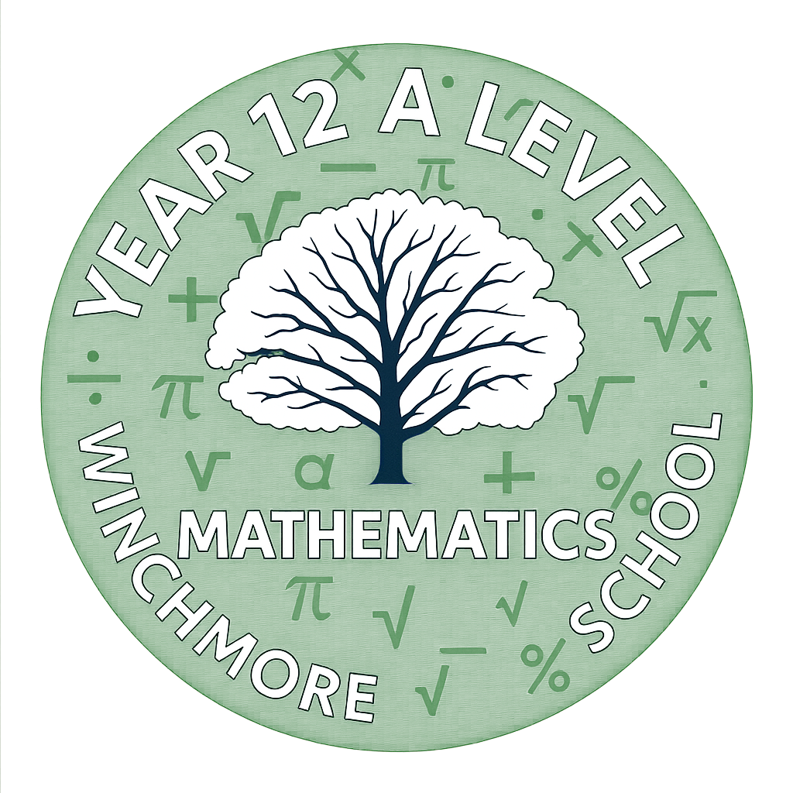

Sixth Form — A Level Mathematics
AS-level content — building the foundations of pure maths, statistics, and mechanics.
Modules
Click each module to expand the full topic list.
Resources
Comprehensive A Level topic questions and worked examples
A Level past papers, mark schemes, and topic notes
Challenging A Level practice papers and exam-style questions
Topic notes, past papers, and worked examples for every A Level module